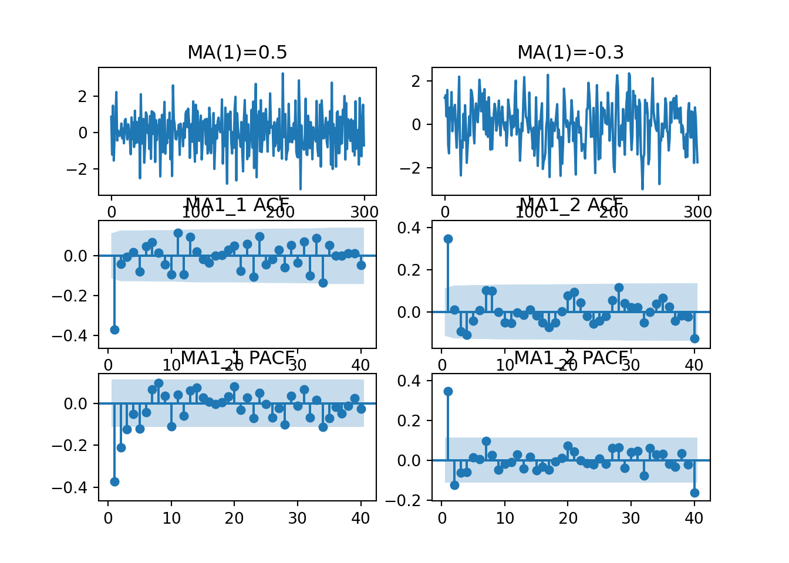
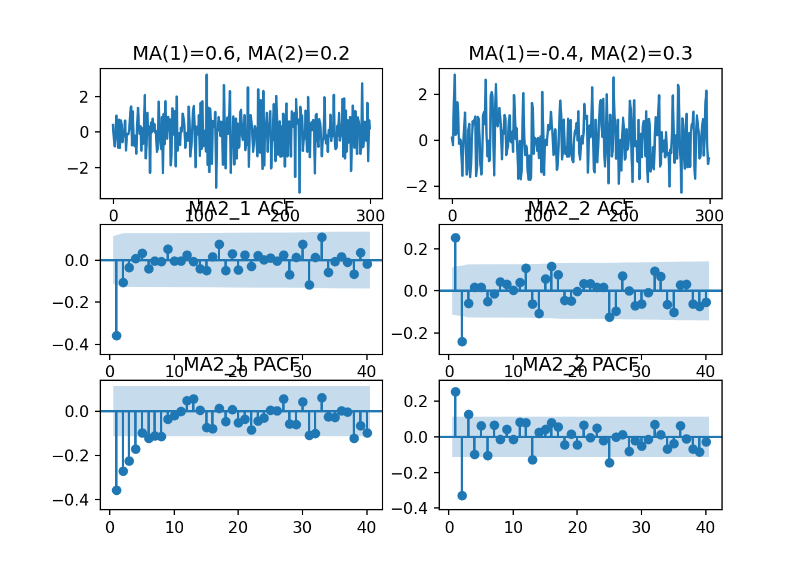

Chapter 7 4.4 이동평균 모형
7.1 -
7.1.1 -
일반적인 q-차 이동평균모형(MA(q)모형)의 표현식은 다음과 같다.
\[ x_t = a_t - \theta_1a_{t-1} - \theta_2a_{t-2} - \cdots - - \theta_qa_{t-q} + \mu \\ = (1 - \theta_1B- \theta_2B^2 - \cdots - \theta_qB^q )a_t + \mu\\ = \theta(B)a_t+ \mu \]
AR(p)모형에서는 안정성 조건을 이야기하였다. 그러나 유한한 차수 MA(q)모형에서는 기대값이 항상 0\(E(x_t)=0\)이고, 분산이 \(\sigma^2_x=(1+\theta^2_1+\theta^2_2+\cdots+\theta^2_q)\sigma^2_a < \infty\) 이므로 항상 안정적이므로 안정성 조건을 별도로 확인할 필요는 없다.
7.2 4.4.1 MA(1) 모형
7.2.1 -
MA(1)모형은 다음과 같다. (\(\mu\) 생략)
\[ x_t = a_t - \theta a_{t_1} \\ =(1-\theta L)a_t \\ =\theta(L)a_t \]
MA(1)을 따르는 확률과정의 분산과 공분산은 다음과 같다.
\[ \gamma_0 = \sigma^2_a(1+\theta^2) \\ \gamma_1 = -\sigma^2_a \theta \\ \gamma_k = 0, \ for \ k>1 \]
7.2.1.1 MA(1)모형의 가역성 조건
MA과정이 수렴하는 AR 표현식을 가지려면,
\[ (1-\theta L)^{-1}x_t = a_t \\ (1+\theta L + \theta^2 L^2 +\cdots)x_t = a_t \]
에서 \(|\theta|<1\)의 조건을 만족하여야 한다. 다시 말하자면 MA과정 양변에 \(\theta^{-1}(L)\)를 곱하는 연산이 가능하다는 뜻
7.2.1.2 MA(1)모형의 자기상관함수(ACF)
MA(1)과정의 ACF는 래그 1이후 소멸한다. 즉,
\[ \rho_1 = \frac{-\theta}{1+\theta^2} \\ \rho_k = 0, \quad for \ k>1 \]
7.2.1.3 MA(1)모형의 편자기상관함수(PACF)
MA(1)과정의 PACF는 다음과 같다.
\[ \phi_{11} = \rho_1 = \frac{-\theta}{1+\theta^2} = \frac{-\theta(1-\theta^2)}{1-\theta^4} \\ \phi_{22} = \frac{-\rho^2_1}{1-\rho^2_1} = \frac{-\theta^2(1-\theta^2)}{1-\theta^6} \\ \vdots \\ \phi_{kk} = \frac{-\theta^k(1-\theta^2)}{1-\theta^{2(k+1)}}, \quad for \ k\ge1\\ \]
그러므로 래그 1 이후 소멸하는 ACF의 경우와는 달리 MA(1)과정의 PACF는 지수적으로 점차 감소하며 그 모양은 \(\theta\)의 부호(\(\therefore \quad \rho_1\)의 부호)에 따라 다르다.
7.2.2 예제) MA(1)과정의 실현값 : 시뮬레이션
다음 예제는 시뮬레이션한 MA(1)과정들로 MA1_1과 MA1_2는 각각 \(\theta = 0.5\)와 \(\theta = - 0.3\)을 가정하고 있다.
from statsmodels.tsa.arima_process import ArmaProcess
plt.cla()
fig, ax = plt.subplots(3,2)
# MA1_1 theta = 0.5
plt.subplot(3, 2, 1)
ma1_1_ar_parm = np.array([1])
ma1_1_ma_parm = np.array([1, -0.5])
MA1_1 = ArmaProcess(ma1_1_ar_parm, ma1_1_ma_parm).generate_sample(nsample=300)
plt.plot(MA1_1)
plt.title('MA(1)=0.5')
# MA1_2 theta = -0.3
plt.subplot(3, 2, 2)
ma1_2_ar_parm = np.array([1])
ma1_2_ma_parm = np.array([1, 0.3])
MA1_2 = ArmaProcess(ma1_2_ar_parm, ma1_2_ma_parm).generate_sample(nsample=300)
plt.plot(MA1_2)
plt.title('MA(1)=-0.3')
# MA1_1 acf
plot_acf(MA1_1, lags=40, use_vlines=True, zero = False, auto_ylims=True, ax=ax[1,0], title ='MA1_1 ACF')
# MA1_2 acf
plot_acf(MA1_2, lags=40, use_vlines=True, zero = False, auto_ylims=True, ax=ax[1,1], title ='MA1_2 ACF')
# MA1_1 pacf
plot_pacf(MA1_1, lags=40, use_vlines=True, zero = False, auto_ylims=True, ax=ax[2,0], title ='MA1_1 PACF')
# MA1_2 pacf
plot_pacf(MA1_2, lags=40, use_vlines=True, zero = False, auto_ylims=True, ax=ax[2,1],title ='MA1_2 PACF' )
plt.show()
표본 ACF는 래그 1 이후 소멸함을 알 수 있다. 따라서 AR과정과 반대로 ACF의 cut-off 특성은 자료의 생성과정이 MA과정인지, 그리고 차수는 무엇인지에 대한 유용한 정보를 포함하고 있음을 알 수 있다.
7.3 4.4.2 MA(2) 모형
7.3.1 -
MA(2)모형 과정은 다음과 같이 쓸 수 있다.(\(\mu\) 생략)
\[ x_t = a_t - \theta_1 a_{t_1} - \theta_2 a_{t_2}\\ =(1-\theta L-\theta_2 L^2)a_t \\ \]
이 모형 또한 유한차수 이동평균모형이기 때문에 \(x_t\)는 항상 안정적 과정이다.
7.3.1.1 MA(2)모형의 가역성 조건
가역성 조건은 \((1-\theta L-\theta_2 L^2)a_t=0\)의 근이 복소수 단위원 밖에 존재하는 것이다. 그러므로 AR(2)의 경우와 유사하게 다음의 조건이 만족되는 경우 MA(2)모형은 가역성을 갖는다.
\[ \theta_2 + \theta_1<1 \\ \theta_2 - \theta_1<1 \\ -1<\theta_2<1 \]
7.3.1.2 MA(2)모형의 자기상관함수(ACF)
MA(2)과정의 자기공분산은 다음과 같다.
\[ \gamma_0 = (1+\theta^2_1+\theta^2_2)\sigma^2_a \\ \gamma_1 = -\theta_1(1-\theta_2)\sigma^2_a \\ \gamma_2 = -\theta_2\sigma^2_a \\ \gamma_k = 0, \ for \ k>2 \]
즉, 자기공분산은 래그 2 이후에 소멸하는 것이다. 그러므로 MA(2)과정의 ACF는 다음과 같이 계산하며 래그 2 이후에 소멸하는 특성을 갖는다.
\[ \rho_k = \begin{cases} (-\theta_1(1-\theta_2))/(1+\theta^2_1+\theta^2_2), \quad k = 1 \\ -\theta_2/(1+\theta^2_1+\theta^2_2), \quad k = 2\\ 0, \quad k>2 \end{cases} \]
7.3.1.3 MA(2)모형의 편자기상관함수(PACF)
\(k\ge3\)인 경우 \(\rho_k=0\)임을 유지하면서 PACF는 다음과 같이 계산할 수 있다.
\[ \phi_{11} = \rho_1 \\ \phi_{22} = \frac{\rho_2-\rho^2_1}{1-\rho^2_1}\\ \phi_{33} = \frac{\rho^3_1-\rho_1\rho_2(2-\rho_2)}{1-\rho^2_2-2\rho^2_1(1-\rho_2)}\\ \vdots \]
그러므로 PACF는 \(\theta_1\)과 \(\theta_2\)의 크기 및 부호에 따라 지수적으로 점차 감소하거나 또는 점차 감소하는 sin파장을 그리게 된다.
7.3.2 예제) MA(2)과정의 실현값
다음 예제는 시뮬레이션한 MA(2)과정들로 MA2_1과 MA2_2는 각각 \(\theta_1 = 0.6,\theta_2=0.2\)와 \(\theta_1 = -0.4,\theta_2=0.3\)을 가정하고 있다.
from statsmodels.tsa.arima_process import ArmaProcess
plt.cla()
fig, ax = plt.subplots(3,2)
# MA1_1 theta = 0.6, 0.2
plt.subplot(3, 2, 1)
ma2_1_ar_parm = np.array([1])
ma2_1_ma_parm = np.array([1, -0.6, -0.2])
MA2_1 = ArmaProcess(ma2_1_ar_parm, ma2_1_ma_parm).generate_sample(nsample=300)
plt.plot(MA2_1)
plt.title('MA(1)=0.6, MA(2)=0.2')
# MA1_2 theta = -0.4,0.3
plt.subplot(3, 2, 2)
ma2_2_ar_parm = np.array([1])
ma2_2_ma_parm = np.array([1, 0.4,-0.3])
MA2_2 = ArmaProcess(ma2_2_ar_parm, ma2_2_ma_parm).generate_sample(nsample=300)
plt.plot(MA2_2)
plt.title('MA(1)=-0.4, MA(2)=0.3')
# MA2_1 acf
plot_acf(MA2_1, lags=40, use_vlines=True, zero = False, auto_ylims=True, ax=ax[1,0], title ='MA2_1 ACF')
# MA2_2 acf
plot_acf(MA2_2, lags=40, use_vlines=True, zero = False, auto_ylims=True, ax=ax[1,1], title ='MA2_2 ACF')
# MA2_1 pacf
plot_pacf(MA2_1, lags=40, use_vlines=True, zero = False, auto_ylims=True, ax=ax[2,0], title ='MA2_1 PACF')
# MA2_2 pacf
plot_pacf(MA2_2, lags=40, use_vlines=True, zero = False, auto_ylims=True, ax=ax[2,1],title ='MA2_2 PACF' )
plt.show()
표본 ACF는 래그 2 이후 소멸함을 확인할 수 있다.반면에 표본 PACF는 점차적으로 감소하는 모양을 보이고 있다. 물론, 표본 ACF의 경우 고차의 래그에서도 영이 아닌 값이 있는 것처럼 보여 cut-off 특징이 잘 보이지 않을 수도 있으나 통계적 검정 또는 경험이 쌓이다 보면 이들이 비유의적이라는 것을 알게 될 것이다. 경험적으로 cut-off 특성은 ACF와 PACF를 동시에 보면서 상대적으로 판단하는 것이 유용할 때가 많다. 예를들면 PACF가 상대적으로 taper-off 특성을 가지고 있는 것을 쉽게 판단할 수 있을 것이다. 물론 실증분석에서는 적정 모형 설정 절차에 의하여 판단하는 것이 일반적이다.
7.4 4.4.3 q-차 이동평균모형(MA(q)모형)
이론적인 MA(q)확률과정의 분산은 다음과 같다.
\[ \gamma_0 = (1+\theta^2_1+\cdots+\theta^2_q)\sigma^2_a \]
자기공분산과 자기상관함수는 다음과 같다.
\[ \gamma_k = (-\theta_k + \theta_1\theta_{k+1}+\theta_2\theta_{k+2}+\cdots+\theta_{q-k}\theta_{q})\sigma^2_a, \quad (k=1,2,\cdots,q)\\ =0,\quad (k>q)\\ \quad\\\rho_k=(-\theta_k + \theta_1\theta_{k+1}+\theta_2\theta_{k+2}+\cdots+\theta_{q-k}\theta_{q})/(1+\theta^2_1+\cdots+\theta^2_q), \quad (k=1,2,\cdots,q)\\ =0,\quad (k>q) \]
그러므로 MA(q)모형에서 ACF는 래그 q 이후에 소멸하는 반면 PACF는 점차 감소하는 특성을 보이게 된다.